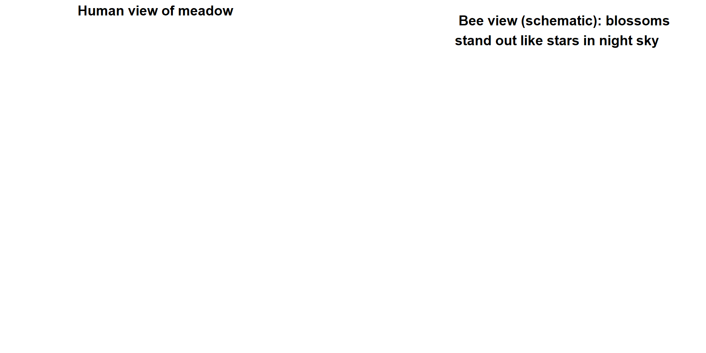

Code
# Verify in R
n <- 23
days_in_year <- 365
prob_all_different <- prod((days_in_year - 0:(n - 1)) / days_in_year)
prob_match <- 1 - prob_all_different
prob_match
# [1] 0.5072972

This tutorial introduces the foundations of quantitative reasoning and scientific thinking. It asks a deceptively simple question: why can we not simply observe the world carefully and reason from what we see? The answer — that human perception and cognition are systematically biased in ways that evolution has shaped but that our research goals require us to overcome — provides the motivation for the entire scientific enterprise.
The tutorial covers cognitive biases that affect how we perceive patterns, probability, and causation; logical fallacies that undermine valid reasoning; the philosophical foundations of the scientific method including Karl Popper’s theory of falsification; and what it means to apply scientific thinking to linguistics and to everyday claims about the world.
By the end of this tutorial you will be able to:
This tutorial assumes no prior knowledge of statistics or research methods. It is designed as a first step and does not require completion of any earlier tutorial. Readers who want to build directly on this foundation may proceed to:
Martin Schweinberger. 2026. Introduction to Quantitative Reasoning: Why We Need Science. The Language Technology and Data Analysis Laboratory (LADAL), The University of Queensland, Australia. url: https://ladal.edu.au/tutorials/quant_intro/quant_intro.html (Version 3.1.1).
What you will learn: Why pure logical reasoning cannot answer empirical questions; why careful observation alone is insufficient; and how human cognition is systematically biased in ways that make a disciplined scientific methodology necessary.
Before addressing why science is necessary, it is worth establishing what it is.
Science is a methodological process used to acquire knowledge about the world based on empirical evidence.
The key components are:
For some domains, reasoning alone works well. The formal sciences — logic and mathematics — proceed entirely through deduction:
Premise 1: Socrates is a human being
Premise 2: All humans are mortal
Conclusion: Therefore, Socrates is mortalIf the premises are true and the logic is valid, the conclusion must be true. No observation of Socrates is required.
The problem is that logic cannot tell us which possible world is our world. Consider three equally coherent possibilities:
Possible world 1: I raise my left arm after counting to 3
Possible world 2: I raise my right arm after counting to 3
Possible world 3: I raise neither arm after counting to 3All three are logically possible. To know which one actually happened requires empirical evidence — observation of what occurred. (For the record: I counted to two and raised neither arm.)
If we need evidence, why not simply observe the world attentively? Because human beings are systematically biased observers. The remainder of this tutorial demonstrates this problem in detail.
What we fear is often not what actually harms us. Two widely cited contrasts illustrate this:
Strangers versus known contacts. Our fear of strangers — sometimes called “stranger danger” — is vivid and pervasive. Yet the evidence consistently shows that most violence against children and adults occurs within families and among known contacts, not from strangers. The fear is misplaced, and the misplacement has real costs in how we direct protective attention.
Sharks versus cows and mosquitoes. Shark attacks are dramatic and memorable, and have been amplified by popular culture. Yet in the United States, cows kill roughly 20 people per year while sharks kill fewer than one on average. Globally, mosquitoes cause around 700,000 deaths annually through disease transmission. The asymmetry between fear and statistical risk is striking.
The explanation is that vivid, emotionally charged narratives override statistical information. Evolutionary pressures favoured quick emotional responses to salient threats over careful actuarial reasoning.
Confirmation bias is the tendency to seek out, interpret, and remember information in ways that confirm what we already believe, while ignoring or discounting contradictory evidence.
This bias is both pervasive and insidious: it affects experts as much as novices, operates even when we are trying to be objective, and reinforces existing beliefs — including incorrect ones — rather than correcting them. We will demonstrate it directly with the Wason Selection Task and the Number Sequence Puzzle in Part 3.
Most people are surprised by how consistently wrong their intuitions are when it comes to probability and statistics. Two classical demonstrations make this vivid.

Monty Hall hosted the American television game show Let’s Make a Deal. The game works as follows:
Think about this carefully before reading on. Most people have a strong intuition about the answer.
The intuitive answer is that it does not matter — there are now two doors remaining, so the probability must be 50-50. This is incorrect.
You should always switch. Switching gives you a 2/3 probability of winning; staying gives you only 1/3.
When you initially chose Door 1, you had a 1/3 chance of being right. Doors 2 and 3 together held a 2/3 chance of hiding the prize.
When Monty opens Door 3 (always revealing a goat, because he knows where the prize is), that 2/3 probability does not disappear — it concentrates entirely onto Door 2. Door 1 still has only its original 1/3 probability.
| Door | Before Monty opens Door 3 | After Monty opens Door 3 |
|---|---|---|
| Door 1 (your choice) | 1/3 | 1/3 |
| Door 2 | 1/3 | 2/3 |
| Door 3 | 1/3 | 0 (revealed as goat) |
The key insight is that Monty’s action is not random — he always opens a losing door. That constraint is what transfers probability.
A more transparent version: 20 doors. Imagine 20 doors instead of 3. You pick Door 1 (1/20 chance of winning). Monty then opens 18 doors, all revealing goats, leaving one other door closed. Would you switch? Almost everyone would — it is obvious that the 19/20 probability has concentrated onto that one remaining door. The logic with 3 doors is identical, just less intuitively obvious.
You can verify this empirically using an online Monty Hall simulation. Running 100 trials with each strategy consistently produces roughly 33% wins when staying and 67% wins when switching.
How many people need to be in a room for there to be a 50% chance that two of them share a birthday? Think about your answer before reading on.
Most people guess something around 100 or even 183 (half of 365). The correct answer is only 23. With 23 people, the probability that at least two share a birthday is 50.7%.
The calculation is most easily approached by computing the complement — the probability that all 23 people have different birthdays:
Person 1: 365/365 (any birthday is fine)
Person 2: 364/365 (must differ from person 1)
Person 3: 363/365 (must differ from persons 1 and 2)
...
Person 23: 343/365 (must differ from all 22 others)
P(all different) = (365 × 364 × 363 × ... × 343) / 365^23
= 0.4927
P(at least one match) = 1 - 0.4927 = 0.5073# Verify in R
n <- 23
days_in_year <- 365
prob_all_different <- prod((days_in_year - 0:(n - 1)) / days_in_year)
prob_match <- 1 - prob_all_different
prob_match
# [1] 0.5072972With 73 people, the probability of a shared birthday exceeds 99.999%.
n <- 73
prob_all_different <- prod((days_in_year - 0:(n - 1)) / days_in_year)
prob_match <- 1 - prob_all_different
prob_match
# [1] 0.9999919The lesson is that we systematically underestimate how quickly probabilities accumulate — particularly with combinatorial calculations. We are reasonably good at linear arithmetic but very poor at reasoning about exponential growth and compound probabilities. This is one of many reasons why statistical analysis cannot be replaced by intuition.

A ball and a bat together cost $1.10. The bat costs $1.00 more than the ball. How much does the ball cost?
Most people immediately answer “10 cents.” This is wrong. If the ball costs 10 cents, the bat costs $1.10, and the total is $1.20 — not $1.10.
The correct answer is 5 cents: ball = $0.05, bat = $1.05, total = $1.10.
The psychologist Daniel Kahneman distinguishes two modes of cognition (Kahneman 2011):
System 1 (fast thinking) operates automatically and effortlessly. It generates intuitive responses based on pattern recognition and association. It is fast and requires no conscious effort — but it regularly produces errors on problems that require careful reasoning.
System 2 (slow thinking) is deliberate, effortful, and analytical. It applies logical rules and checks its own work. It is more reliable but requires cognitive effort that we often avoid expending.
The ball and bat problem shows System 1 in action: it generates “10 cents” almost instantly because the numbers $1.00 and $0.10 are salient and combine to give a plausible total. System 2, if engaged, immediately detects the error — but System 1 answers first and System 2 tends to be lazy about checking plausible-seeming answers.
Science can be understood as a set of institutional and methodological procedures designed to force deliberate, effortful, System 2 reasoning. Peer review, pre-registration, replication, controlled experiments, and statistical testing are all mechanisms for preventing the fast, intuitive, and frequently wrong conclusions of System 1 from being accepted as knowledge. Science is expensive in time and effort — but it produces more reliable knowledge precisely because of that cost.
In a classic experiment, B. F. Skinner (1948) placed pigeons in boxes where food was delivered at random intervals, with no connection to anything the pigeon did. The result was that each pigeon developed idiosyncratic repetitive behaviours — one turned in circles, another pecked at corners of the box — which it had happened to be performing when food arrived by chance.

The pigeons had assumed a causal connection between their behaviour and the food reward, even though the delivery was entirely random. Each accidental co-occurrence reinforced the behaviour, creating what Skinner called “superstitious” conditioning.
Human superstitions operate by the same mechanism. Athletes who perform well while wearing a particular item of clothing begin treating that item as a causal agent. Gamblers develop “systems” based on perceived patterns in random sequences. In all cases, the cognitive machinery evolved to detect genuine patterns in the environment applies itself inappropriately to random co-occurrences.
Why this matters for research: The same tendency that creates superstition in pigeons and humans can create false patterns in data. If you run enough analyses on a dataset, some will produce significant results by chance alone. This is one reason why hypotheses should be specified before data collection (pre-registration), not inferred from the data retrospectively.
Pareidolia is the perception of meaningful patterns — especially faces — in random or ambiguous stimuli. Famous examples include the “Face on Mars” photographed by Viking 1 in 1976 (later shown to be an ordinary rock formation under different lighting), apparent religious figures in food burn marks, and the “Man in the Moon” (with different cultures perceiving different figures in the same lunar surface).
The evolutionary explanation (Bruce Hood, Cardiff University) is straightforward. The ability to quickly detect faces — and particularly to distinguish friend from foe, safe from threatening — was highly adaptive. The cost of a false negative (failing to detect a real face when one is present) was potentially severe: missing a predator or failing to recognise an enemy. The cost of a false positive (seeing a face where there is none) was low: a momentary misperception with no lasting consequence. Evolution therefore favoured an over-sensitive face-detection system, and we inherit the result.
A professor offers you $10 to wear a sweater for one minute. Would you accept?
Most people would. Now consider an additional detail: the sweater previously belonged to a convicted serial killer. Does this change your answer?
Many people become reluctant, or feel discomfort even if they would still accept. Rationally, the sweater is just cloth — its history carries no physical trace that could harm the wearer. Yet the feeling of contamination is real and difficult to dismiss by reasoning.
The evolutionary explanation mirrors that for pareidolia. Ancestors who avoided objects associated with disease, death, or dangerous individuals were at a genuine survival advantage — contaminated objects can carry pathogens. The emotional response of disgust and avoidance was adaptive. Today, that same response activates in contexts where it no longer makes adaptive sense but where we inherited the tendency nonetheless.
Anthropocentric bias (sometimes called experiential realism) is the assumption that the world appears to all organisms as it appears to us — that our perceptual experience constitutes, rather than merely filters, reality.
Consider human versus bee vision. Humans perceive light in the wavelength range of approximately 400–700 nanometres. Bees perceive roughly 300–650 nm, which includes ultraviolet light but excludes red (which appears black to them). The practical consequence is that flowers look dramatically different to bees than to us: many flowers have ultraviolet patterns that guide bees to nectar but are completely invisible to human eyes.

The philosopher-linguists Evans and Green put this well:
“However, the parts of this external reality to which we have access are largely constrained by the ecological niche we have adapted to and the nature of our embodiment. In other words, language does not directly reflect the world. Rather, it reflects our unique human construal of the world: our ‘world view’ as it appears to us through the lens of our embodiment.”
— Evans and Green (2006, 46)
The implications for research are significant. Any science that takes human perception as a transparent window onto reality — rather than as one evolved, partial, species-specific perspective on it — will systematically reproduce the biases of that perspective. This is a further argument for why we need systematic, instrument-mediated, and community-checked science rather than just careful personal observation.

What happens: After staring at the red square, the left portion of the dunes appears greenish. After staring at the green square, the right portion appears reddish.
Why: The red-sensitive and green-sensitive photoreceptors in your retina become temporarily fatigued (depleted of neurotransmitter). When you look at the neutral sand, the fatigued cells fire less strongly, so the complementary colour dominates. What you “see” is not simply what is there — it is the output of a neurophysiological process that is itself subject to fatigue, context, and prior stimulation.
Gestalt psychology (from the German word for “form” or “shape”) studies how we perceive unified wholes from collections of parts. Several classic principles demonstrate that perception is an active, constructive process, not a passive recording of stimulation.

The Kanizsa triangle above contains no actual triangle — there are three Pac-Man shapes and three angle markers. Yet virtually everyone perceives a bright white triangle overlaying the other elements. The brain constructs the missing contours from partial information, using the principle of closure (completing incomplete shapes).
When the same elements are rearranged, the triangle disappears and three Pac-Man shapes appear instead:

Same elements, different arrangement — radically different perception. Other Gestalt principles include proximity (nearby items are perceptually grouped), similarity (similar items are grouped), continuity (smooth lines are preferred over sharp changes), and common fate (items moving together are grouped).
All of these principles demonstrate the same point: perception is not a record of the external world but a construction that the brain generates based on partial information, prior expectations, and evolved heuristics.
Look at the two upside-down faces above. One may seem slightly unusual, but both appear roughly human and recognisable.
Now look at the same images right-side-up:
The distortion — eyes and mouth inverted relative to the face — that was barely noticeable upside-down is now grotesque and immediately obvious.
Why: When a face is inverted, the brain does not deploy its specialised face-processing system; it processes the image as a generic object. Local distortions go unnoticed. When the face is right-side-up, the full face-processing architecture activates, and the mismatch between the expected face template and the actual distorted image is immediately detectable. Context (orientation) determines which perceptual processing system is recruited, and that choice determines what we see.
The ambiguous figure below illustrates how context determines categorical perception:

The middle symbol in the alphabetic sequence A, B, C is typically read as the letter “B.”

The same symbol in the numeric sequence 12, 13, 14 is typically read as the number “13.”
The physical stimulus is identical in both cases. What changes is the context, which activates different prior expectations and determines which categorical interpretation the perceiver reaches. The same stimulus produces different perceptions depending on its context. This has direct implications for linguistics: the same linguistic form can carry different meanings in different contexts, and we cannot study meaning without studying context.
Q1. The Monty Hall problem reveals a systematic failure of probabilistic intuition. The core of the correct solution is that Monty’s action is not random. Which statement best captures why this matters?
Q2. Pareidolia and Skinner’s pigeon experiments both illustrate the same underlying cognitive tendency. What is it?
What you will learn: The most common logical fallacies encountered in academic discourse, media, and everyday argumentation — what they are, why they are fallacious, and how to recognise and counter them.
A logical fallacy is a pattern of argument that appears persuasive but contains a fundamental flaw in reasoning. Logical fallacies are not merely weak arguments — they are systematically invalid in a way that can be precisely identified.
Recognising logical fallacies matters because they are pervasive in public discourse, because everyone is susceptible to them (including trained researchers), and because they prevent accurate conclusions and undermine rational debate. Being able to name and explain a fallacy is not merely an academic exercise: it is a practical tool for evaluating claims.
What it is: Selectively seeking out, reporting, or emphasising evidence that supports a preferred conclusion while ignoring or discounting contradictory evidence.
Example:
Claim: "Vaccines cause autism!"
Evidence cited: 1 study (subsequently retracted for scientific fraud) that found a link
Evidence ignored: 100+ subsequent independent studies that found no linkWhy it is a fallacy: The strength of evidence lies in its totality, not in the existence of at least one supporting study. Every scientific question can find at least one study pointing in any direction; what matters is the weight and quality of the full body of evidence.
Scientific solution: Pre-register analysis plans before collecting data; report all results including negative ones; conduct systematic reviews and meta-analyses that pool evidence across studies.
What it is: Attacking the character, credentials, or motives of a person making an argument rather than addressing the argument itself.
Examples:
Why it is a fallacy: A person’s character, political affiliation, or funding source does not determine whether their argument is logically valid or their evidence reliable. These are separate questions. An argument must be evaluated on its own merits.
Correct approach: Identify specific methodological or logical flaws in the argument itself. If funding bias is a concern, examine whether the methods and conclusions are appropriate — not whether the funding source is ideologically convenient.
What it is: Misrepresenting an opponent’s position — usually by exaggerating or oversimplifying it — in order to attack the weaker, distorted version rather than the actual argument.
Example:
Person A: "We should have some regulations on firearms to reduce violence."
Person B: "You want to ban all guns and leave people completely defenceless!"Person A said nothing about banning all guns. Person B has constructed a distorted version (“straw man”) of the argument because it is easier to defeat than the actual position.
Why it is called “straw man”: A straw man is easy to knock down, unlike a real opponent. Winning against a straw man creates the appearance of having refuted the real argument without having engaged with it.
What it is: Claiming that a proposition is true because it has not been proven false (or vice versa). Treating absence of evidence as evidence of absence — or, more commonly in practice, as evidence of presence.
Examples:
Why it is wrong: Absence of evidence is not, in general, evidence of absence. There are many things that have not yet been investigated. The appropriate response to insufficient evidence is to remain agnostic — to say “we do not yet know” — not to fill the gap with a preferred explanation.
Correct reasoning: Maintain that the burden of proof lies with the person making the positive claim. Absence of disproof does not confirm the claim; it merely leaves it untested.
What it is: Presenting a situation as though only two options exist, when in fact more are available — typically by framing the two extreme positions as the only possibilities.
Examples:
Why it is manipulative: It forces a choice between extremes, eliminates middle ground and compromise, and polarises discussion by making nuanced positions invisible.
What it is: Claiming that one action will inevitably lead, through a chain of steps, to an extreme and undesirable outcome — without providing evidence that the causal chain would actually operate.
Examples:
When it is legitimate: When there is actual evidence that each step in the chain follows predictably from the previous one, a slope argument may be valid. The fallacy lies in asserting the chain without that evidence.
When it is a fallacy: When the argument relies on fear of an extreme outcome rather than on evidence that the intermediate steps are likely.
What it is: An argument in which the conclusion is already contained in, or assumed by, one of the premises. The argument appears to provide evidence for its conclusion but actually just restates the same claim in different words.
Examples:
Why it fails: No new information is added. If you accept the premise, you have already accepted the conclusion. The argument provides no independent reason to believe the conclusion is true.
Valid structure: Independent premises lead through explicit reasoning to a conclusion that was not already assumed in the starting point.
What it is: Introducing irrelevant information to distract from the actual question or issue under discussion.
Example:
Journalist: "Why did the government waste millions on this failed project?"
Politician: "Let me tell you about all the great schools we have built.
Education is so important, do you not agree?"The politician has not addressed the question of the waste. Instead, they have introduced a different — and more politically comfortable — topic.
Why it works: People naturally follow new conversational directions, and the original question is easy to lose track of, especially in spoken discourse.
What it is: Continuing to invest resources (time, money, effort) in something because of what has already been invested, even when the future expected costs outweigh the future expected benefits.
Examples:
Why it is irrational: Past costs are irretrievable. They cannot be recovered and are therefore irrelevant to the decision about what to do next. The only rational question is: given the current situation, do the expected future benefits outweigh the expected future costs?
Rational approach: Evaluate each decision forward-looking only. Ask: if I were starting from scratch with no prior investment, would I begin this? If no, the sunk cost fallacy may be operating.
Without awareness of logical fallacies, researchers and readers reach wrong conclusions, waste resources, defend indefensible positions, and spread misinformation — even in good faith.
Science provides the institutional antidote: peer review catches ad hominem and cherry-picking; pre-registration counters confirmation bias; the requirement to engage with the strongest version of opposing theories counters straw man arguments; and the norm of reporting negative results counters selective reporting.
Recognising fallacies in one’s own thinking is harder than recognising them in others’ — but it is the more important skill.
You see four cards. Each card has a letter on one side and a number on the other side. The visible faces are:
Card 1: A Card 2: K Card 3: 2 Card 4: 7The rule: “If there is a vowel on one side of a card, then there is an even number on the other side.”
Think carefully. You need to choose the minimum set of cards that could definitively falsify the rule.
The most common answer is Cards 1 and 3 (A and 2). This is incorrect.
The correct answer is Cards 1 and 4 (A and 7).
What this demonstrates: Most people turn over cards that confirm the rule (vowel, even number) rather than cards that could falsify it (vowel?, odd number). This is confirmation bias operating in a purely logical context. Scientific thinking requires actively seeking evidence that could prove you wrong, not just evidence consistent with your hypothesis.
Here are three numbers that follow a rule I have in mind:
1 2 4You may propose one additional number, and I will tell you whether it follows my rule. What number would you choose, and what rule do you hypothesise?
What is your hypothesis about the rule? What number would best test it?
Typical responses: Most people guess 8 (following the “doubling” hypothesis) or 16 (following the “squaring” hypothesis). Both follow the rule — but neither tests whether the hypothesis is correct.
A better strategy: Propose a number that your hypothesis predicts would not follow the rule — say, 3 or 7 or 10. If the rule is “each number is larger than the previous one” (which it is), then 3 would follow the rule, falsifying the doubling hypothesis.
The actual rule: “Each number must be larger than the previous number.”
What this demonstrates: Confirmation bias again. When people think their hypothesis is “doubling,” they propose numbers that would confirm it rather than numbers that would challenge it. But only by testing the boundaries of your hypothesis — by attempting to falsify it — can you distinguish your hypothesis from the many other hypotheses compatible with your initial evidence.
Q3. A politician responds to a question about rising crime rates by saying: “I am proud of the new schools this government has built, and education is the foundation of a safe society.” Which fallacy does this illustrate?
Q4. A friend argues: “I have watched five seasons of this series and it has been mediocre throughout. I might as well finish it — I have already invested 40 hours.” What is the flaw in this reasoning?
What you will learn: A comprehensive definition of science; the distinction between empirical and formal sciences; the scientific method as a cycle of hypothesis-testing; the Clever Hans case study as a demonstration of why methodology matters; and Popper’s principle of falsification as the criterion that separates scientific from non-scientific claims.
The working definition given in Part 1 can now be made more precise:
Science is an unbiased, fundamentally methodological enterprise that aims at building and organising knowledge about the empirical world in the form of falsifiable explanations and predictions, by means of systematic observation and experimentation.
The key components are:
Empirical sciences examine phenomena of reality through the scientific method. Their goal is to explain and predict what actually exists and occurs. Examples include biology, physics, chemistry, psychology, sociology, and linguistics. Their method involves observing reality, forming and testing hypotheses, and refining theories in response to evidence.
Formal sciences examine abstract systems through axiomatic reasoning. Their goal is logical coherence and internal consistency. Examples include mathematics, formal logic, theoretical computer science, and formal linguistics. Their method involves starting from axioms, applying logical operations, and deriving theorems. Crucially, formal sciences can prove their results — because their claims concern abstract objects defined by their own axioms.
The key difference is epistemological: formal sciences can establish truths by logical proof; empirical sciences cannot prove — they can only test and potentially falsify. As Popper showed, this asymmetry between proof and falsification is fundamental to understanding how science works.

Science does not proceed in a straight line from observation to truth. It is a cycle of hypothesis formation, testing, revision, and renewed testing — a continuous self-correcting process.
The basic steps are:
The abstract steps become concrete with a trivial everyday example:
Observation: My keys are missing.
Question: Where are my keys?
Literature: I have left them on the TV table before.
H₁: My keys are on the TV table.
H₀: My keys are NOT on the TV table.
Design: I will check the TV table.
Data: I checked — no keys there.
Analysis: H₀ cannot be rejected.
Conclusion: My keys must be elsewhere.
New H₁: My keys are in my coat pocket.
[Repeat]This trivial example captures the logic that applies to the most sophisticated experiments.

Between 1891 and 1904, a horse named Clever Hans became famous across Europe for apparently being able to perform arithmetic, answer questions in German, spell words, and tell the time. His owner, Wilhelm von Osten, would ask questions and Hans would tap his hoof the correct number of times. Multiple scientific commissions investigated and found no evidence of fraud. Von Osten appeared to genuinely believe in his horse’s abilities.
The psychologist Oskar Pfungst (1907) took a more systematic approach. He designed controlled experiments varying two factors: whether the questioner knew the correct answer, and whether Hans could see the questioner.
| Condition | Result |
|---|---|
| Questioner knows answer + Hans can see questioner | Hans answers correctly |
| Questioner does not know answer | Hans cannot answer |
| Hans can see questioner | Hans answers correctly |
| Hans cannot see questioner (blinders) | Hans cannot answer |
The pattern was unambiguous: Hans’s performance depended entirely on whether he could see someone who knew the answer.
Pfungst found that questioners unconsciously provided micro-cues that Hans had learned to read. When asking a question requiring a numerical tap count, the questioner would unconsciously tense up; as Hans approached the correct number, the questioner would relax slightly. Hans had learned to start tapping at the tensing cue and stop at the relaxing cue — appearing to know the answer when he was actually reading involuntary muscle movements.
The term Clever Hans effect now refers to any situation in which an experimenter’s unconscious behaviour influences a subject’s responses, and serves as a reminder of why blinding and systematic methodology are not merely bureaucratic requirements but essential safeguards against self-deception.

The Austrian-British philosopher Karl Popper (1902–1994) identified a fundamental problem with the traditional view of science as proceeding from many observations to general laws:
Traditional view:
Observation 1: Swan 1 is white
Observation 2: Swan 2 is white
...
Observation 10,000: Swan 10,000 is white
↓
Law: All swans are whitePopper’s insight: No number of confirming observations can prove a universal generalisation true. No matter how many white swans you observe, the 10,001st swan might be black. And indeed, when Europeans arrived in Australia they encountered black swans — observations that immediately falsified the “all swans are white” generalisation that had seemed secure for centuries.
But notice the asymmetry: a single black swan is sufficient to refute the universal claim. While we cannot verify by accumulating positive evidence, we can — and must — test by seeking negative evidence.
A theory is scientific if and only if it is falsifiable.
A theory is falsifiable when it is possible to describe, in advance, what kind of observation would prove it wrong. Falsifiable theories take an empirical risk: they stake out a position that could be contradicted by evidence.
A theory that is compatible with every possible observation is not scientific — not because it is necessarily false, but because it cannot be tested and therefore cannot be part of the self-correcting process that constitutes science.
Falsifiable (scientific) examples:
Not falsifiable (not scientific) examples:
The last example points to Popper’s famous critique of psychoanalysis: Freudian theory, he argued, is structured so that any conceivable behaviour can be interpreted as confirming it. A patient who is close to their mother confirms the Oedipal hypothesis; a patient who is distant from their mother confirms it too (they are “repressing” their feelings). A theory that cannot be falsified by any evidence is not a scientific theory — even if it happens to be true.
Popper drew an analogy between science and biological evolution. In evolution, genetic variation is subjected to natural selection — variants that fit their environment survive; those that do not are eliminated. In science, theoretical variation (new hypotheses and conjectures) is subjected to empirical testing — theories that withstand attempts at falsification survive; those that do not are rejected. Both processes are progressive but not teleological: they eliminate what does not work without guaranteeing that what remains is final truth.
Implications for research practice:
Linguistics is the scientific study of language and individual languages. Linguists aim to uncover, describe, explain, and model the systems that underlie human language use.
As an empirical science, linguistics studies language through systematic observation of real language use, tests hypotheses about linguistic structure and function, and produces falsifiable claims about how language works.
Descriptive versus prescriptive linguistics illustrates the scientific/non-scientific distinction:
| Approach | Character | Example |
|---|---|---|
| Descriptive (scientific) | Describes what speakers actually do | “English speakers frequently use ain’t in casual conversation” |
| Prescriptive (non-scientific) | Prescribes what speakers should do | “You should not say ain’t” |
Prescriptive claims are not falsifiable in Popper’s sense — they are normative, not empirical. Descriptive claims can be tested against corpus data and thus belong to the domain of science.
Example: the scientific circle in linguistics
Observation: Children appear to learn grammar without explicit instruction.
Question: How do children acquire language?
Literature: Chomsky's Universal Grammar hypothesis;
Tomasello's usage-based approach.
H₁: Children extract grammatical patterns through frequency tracking.
Design: Expose children to artificial language with manipulated
input frequencies; record which patterns they learn.
Data: Children's productions; error patterns; learning rates.
Analysis: Compare learning rates for high- versus low-frequency patterns.
Conclusion: Higher frequency predicts faster acquisition —
supports usage-based hypothesis.
Refinement: Test with different age groups, complexity levels.
[Repeat]Q5. A researcher proposes the theory: “Students who feel positively about their lecturer will perform better on written assessments.” Is this theory scientific in Popper’s sense?
Q6. A therapist argues: “If a patient denies having repressed childhood trauma, that itself shows how deeply it is repressed. If a patient acknowledges having difficult memories, that confirms the trauma theory.” What is the scientific problem with this argument?
What you will learn: How to apply the scientific method to real-world claims — including health claims, news reports, and unusual beliefs — and how to design a linguistics study from the ground up.
Given what we have covered, we can offer a scientific analysis of why people believe in ghosts — not a dismissal of those beliefs, but an explanation of the cognitive and perceptual mechanisms that generate such experiences in the absence of actual ghosts.
Several factors operate together:
Pareidolia and agency detection — the brain is primed to detect faces and intentional agents. In low light, in unfamiliar environments, or when anxious, ambiguous stimuli are more likely to be interpreted as presences.
Confirmation bias — people who believe in ghosts attend to and remember experiences that are consistent with that belief (unexplained sounds, feelings of being watched) and discount or forget the vast majority of experiences that have mundane explanations.
Sleep paralysis — during transitions in and out of REM sleep, it is possible to experience vivid hallucinations combined with an inability to move. This experience — including the sensation of a threatening presence in the room — is well-documented neurologically and has likely generated ghost and demon narratives across cultures.
Infrasound — sounds below the threshold of human hearing (below roughly 20 Hz) can produce feelings of unease, anxiety, and the sensation of an unseen presence. Old buildings with large resonant chambers sometimes produce infrasound.
Emotional factors — grief, sleep deprivation, and fear heighten the tendency to perceive meaningful patterns in ambiguous stimuli.
None of these explanations requires ghosts to exist. Together, they account for the full range of reported ghost experiences using well-understood mechanisms.
Claim: “Vitamin X cures cancer!”
Applying scientific criteria:
An anecdote about one person who took the vitamin and recovered is not evidence in the relevant sense — because people recover from cancer without the vitamin, and we have no way of knowing what would have happened without it.
Headline: “Study shows chocolate improves memory!”
Critical questions for any such claim:
Claim: “This quantum healing bracelet balances your body’s energy.”
Applying scientific analysis:
You want to investigate whether younger or older speakers of English differ in spoken fluency. How would you design this study scientifically?
Think through the following before reading the answer below.
When evaluating evidence or making decisions, watch for:
1. Observe → 2. Question → 3. Review literature →
4. Hypothesise (H₁ and H₀) → 5. Design → 6. Collect data →
7. Analyse → 8. Conclude → 9. Refine → [Repeat]Key principles: falsifiable hypotheses; controlled observation; statistical analysis; peer review; replication.
Questions to ask of any empirical claim:
Martin Schweinberger. 2026. Introduction to Quantitative Reasoning: Why We Need Science. The Language Technology and Data Analysis Laboratory (LADAL), The University of Queensland, Australia. url: https://ladal.edu.au/tutorials/quant_intro/quant_intro.html (Version 3.1.1), doi: 10.5281/zenodo.19332884.
@manual{martinschweinberger2026introduction,
author = {Martin Schweinberger},
title = {Introduction to Quantitative Reasoning: Why We Need Science},
year = {2026},
note = {https://ladal.edu.au/tutorials/quant_intro/quant_intro.html},
organization = {The Language Technology and Data Analysis Laboratory (LADAL), The University of Queensland, Australia},
edition = {3.1.1}
doi = {10.5281/zenodo.19332884}
}sessionInfo()R version 4.4.2 (2024-10-31 ucrt)
Platform: x86_64-w64-mingw32/x64
Running under: Windows 11 x64 (build 26200)
Matrix products: default
locale:
[1] LC_COLLATE=English_United States.utf8
[2] LC_CTYPE=English_United States.utf8
[3] LC_MONETARY=English_United States.utf8
[4] LC_NUMERIC=C
[5] LC_TIME=English_United States.utf8
time zone: Australia/Brisbane
tzcode source: internal
attached base packages:
[1] stats graphics grDevices datasets utils methods base
other attached packages:
[1] cowplot_1.2.0 ggplot2_4.0.2 checkdown_0.0.13
loaded via a namespace (and not attached):
[1] gtable_0.3.6 jsonlite_2.0.0 dplyr_1.2.0
[4] compiler_4.4.2 BiocManager_1.30.27 renv_1.1.7
[7] tidyselect_1.2.1 Rcpp_1.1.1 magick_2.8.5
[10] scales_1.4.0 yaml_2.3.10 fastmap_1.2.0
[13] R6_2.6.1 commonmark_2.0.0 labeling_0.4.3
[16] generics_0.1.4 knitr_1.51 htmlwidgets_1.6.4
[19] tibble_3.3.1 pillar_1.11.1 RColorBrewer_1.1-3
[22] rlang_1.1.7 litedown_0.9 xfun_0.56
[25] S7_0.2.1 cli_3.6.5 withr_3.0.2
[28] magrittr_2.0.4 digest_0.6.39 grid_4.4.2
[31] rstudioapi_0.17.1 markdown_2.0 lifecycle_1.0.5
[34] vctrs_0.7.2 evaluate_1.0.5 glue_1.8.0
[37] farver_2.1.2 codetools_0.2-20 rmarkdown_2.30
[40] tools_4.4.2 pkgconfig_2.0.3 htmltools_0.5.9 This tutorial was revised and restyled with the assistance of Claude (claude.ai), a large language model created by Anthropic. All substantive content — examples, explanations, case studies, and reasoning — was retained from the original and reviewed and approved by Martin Schweinberger, who takes full responsibility for the tutorial’s accuracy.